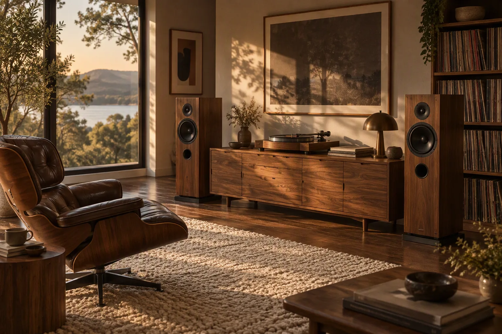

Turntable · 01
TT-12
Belt-driven, brass bearing, solid walnut plinth. Built around an arm that tracks like it has all the time in the world.
- DriveBelt
- Speeds33 / 45
₹1,84,000
NYXO Soundworks · Analogue since 1987
Hand-matched walnut, machined brass and a signal path built by people who still own records. This is hi-fi made to be touched, not just streamed.
The collection · Three pieces
Each unit is finished by a single maker, signed underneath, and matched to its pair by ear before it leaves the bench.
Turntable · 01
Belt-driven, brass bearing, solid walnut plinth. Built around an arm that tracks like it has all the time in the world.
Receiver · 02
Seventy honest watts per channel, a phono stage that respects the record, and VU meters you will watch more than the film.
Loudspeakers · 03
An eight-inch paper cone in a cabinet heavy enough to stay quiet. Warm midrange, patient bass, no showmanship.

Now spinning
Live signalKind of Blue
So What
Recorded live through an NR-70 and LS-8 pair. Headphones recommended.
How it is made
Three weeks per receiver. No shortcuts that you could hear later.
We buy walnut in whole boards, then cut and book-match each cabinet so the grain runs like a single piece around the box.
Knobs are turned from solid stock, brushed by hand and lacquered. The weight is deliberate — you should feel a click, not a shrug.
Every finished unit runs for forty hours on the bench. Two makers listen, adjust bias, and sign the underside before it is boxed.
Visit the showroom
Book an hour in the listening room. Bring a record, or choose from the shelf. We will set the system up around you — no script, no pressure.
Open by appointment
Wednesday – Saturday
11:00 – 19:00
NYXO Soundworks
Bredgade 42, Copenhagen K